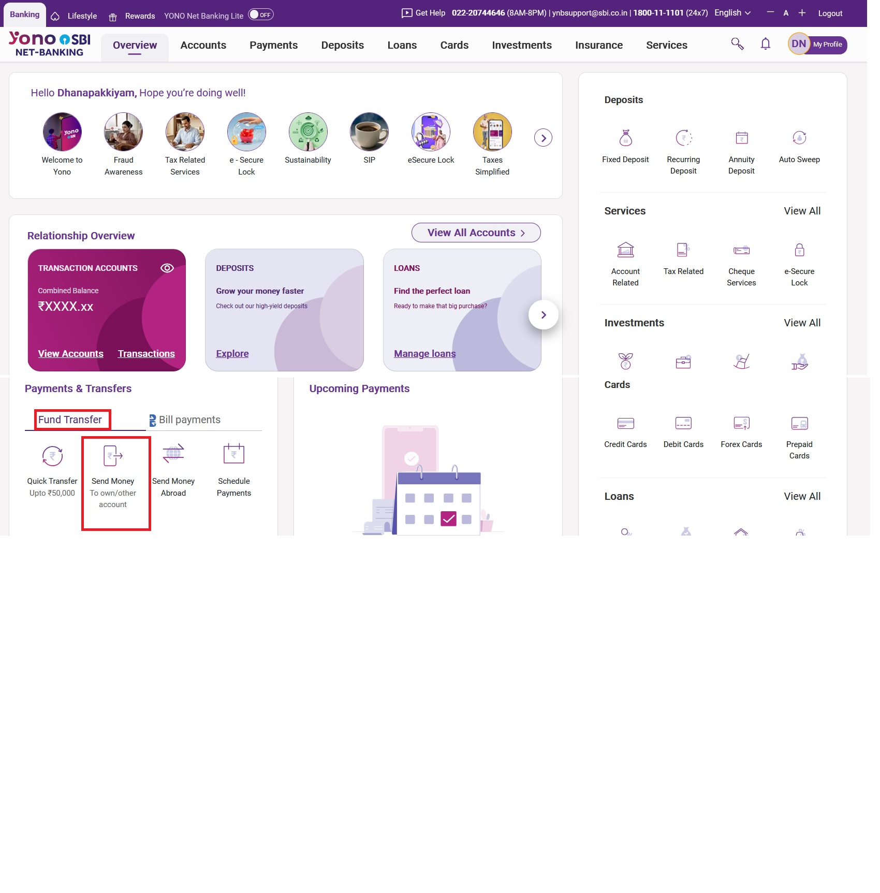
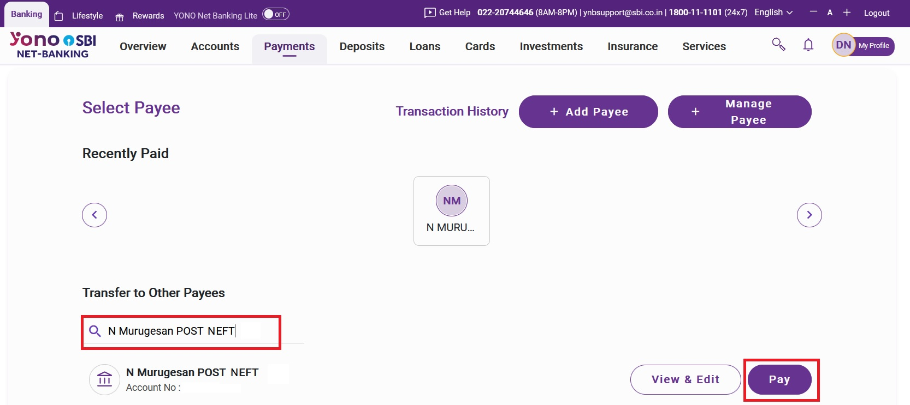
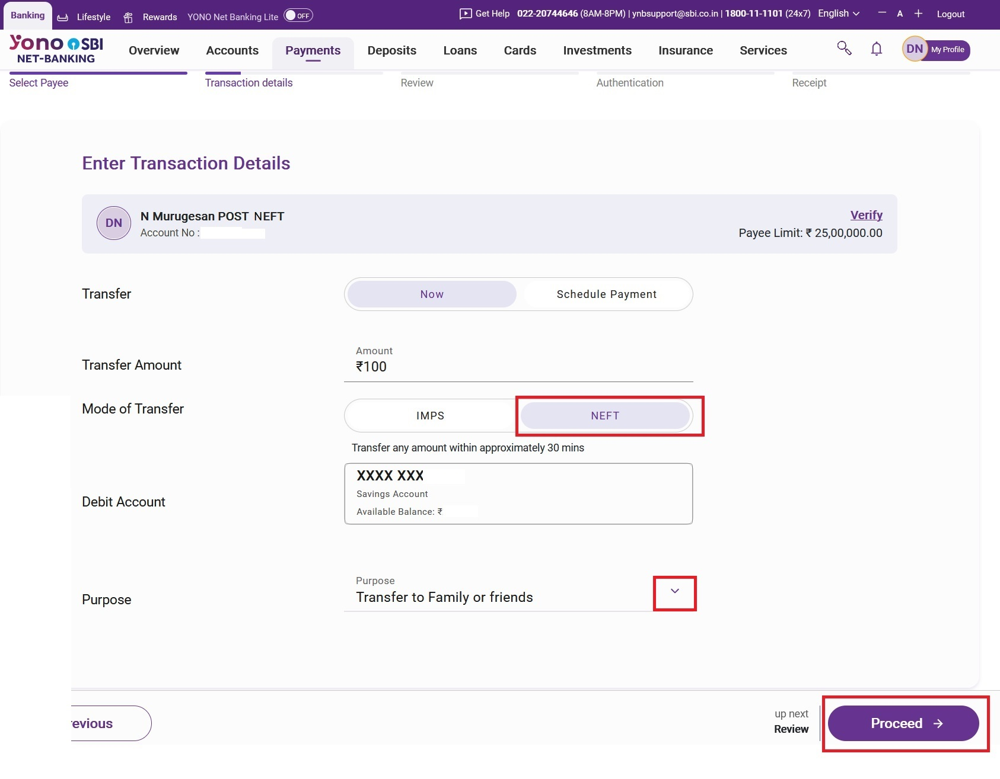
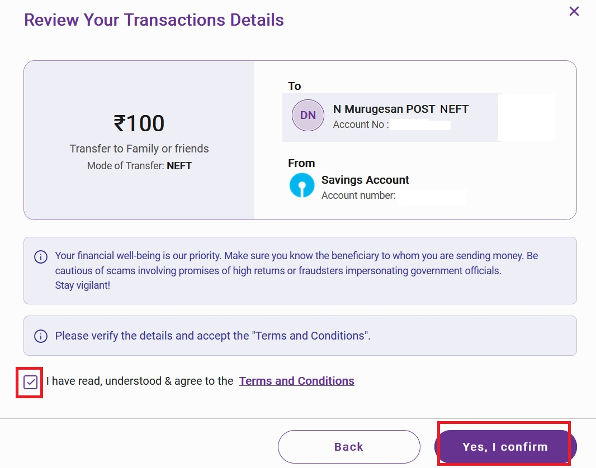
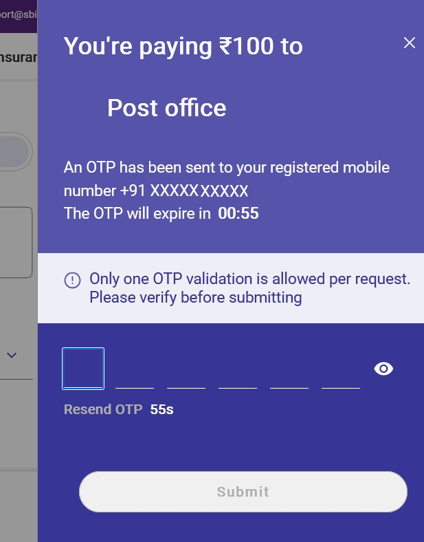
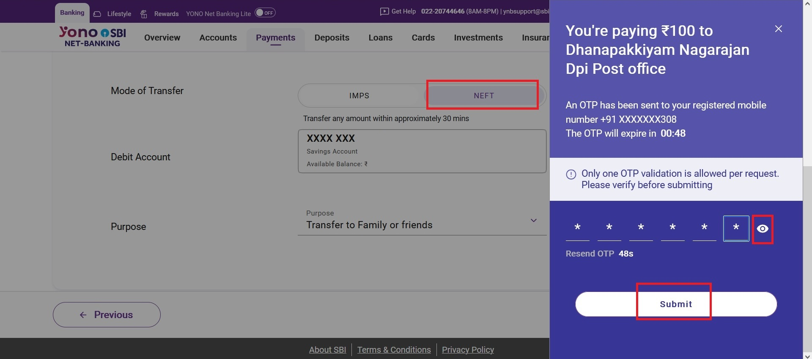
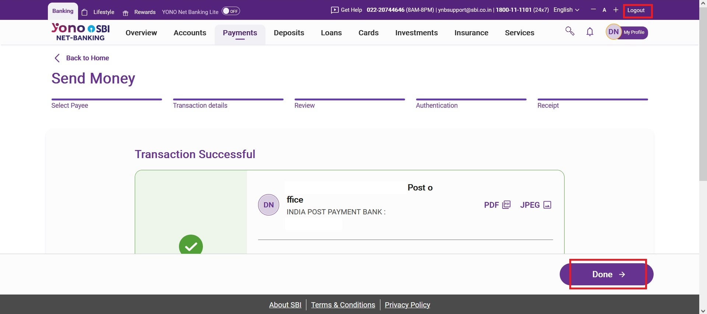

|
Step 1: Login to YONO SBI / Internet Banking
Navigate to SBI YONO Retail, enter your username, password, and Captcha code, complete the login OTP verification on your mobile. Step 2: Initiate Send Money
After successful login, click on the Send Money section.  Step 3: Search Receiver Name
Locate and search for the registered post office beneficiary account.  Step 4: Select NEFT and Reason
Choose NEFT as your transfer mode and select the appropriate reason for the transfer.  Step 5: Confirm Terms
Read through the confirmation details, check the agreement box, and confirm.  Step 6: Enter OTP for Receiver
Enter the OTP received on your registered mobile number to authorize the receiver/transaction.  Step 7: Submit OTP
Submit the entered OTP to proceed with the payment processing.  Step 8: Transaction Complete
Verify the success receipt confirming the SBI to Post Office NEFT transfer.  |